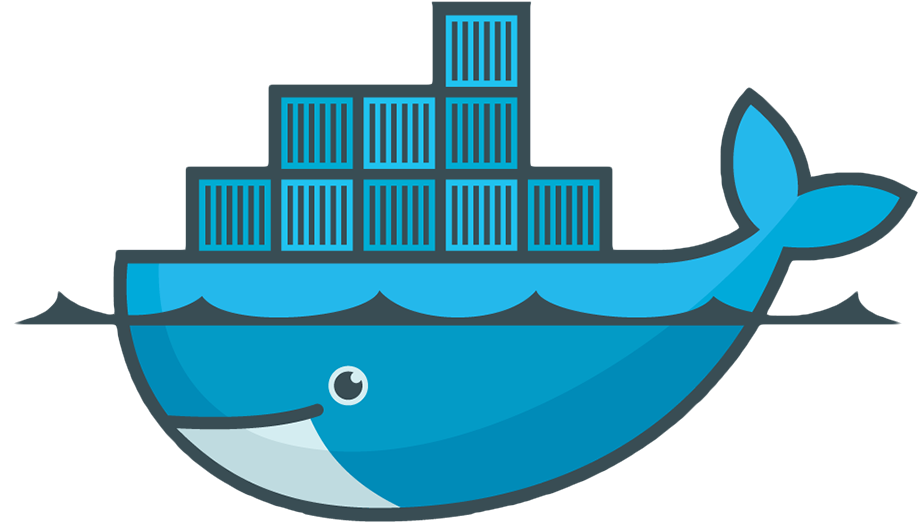
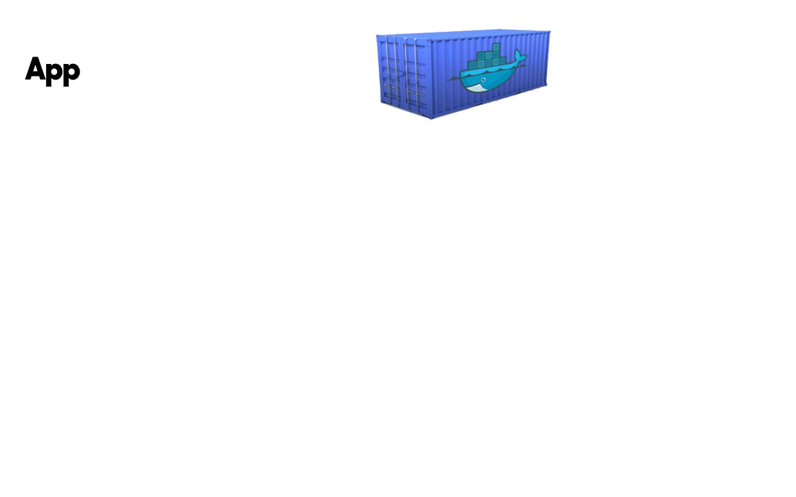
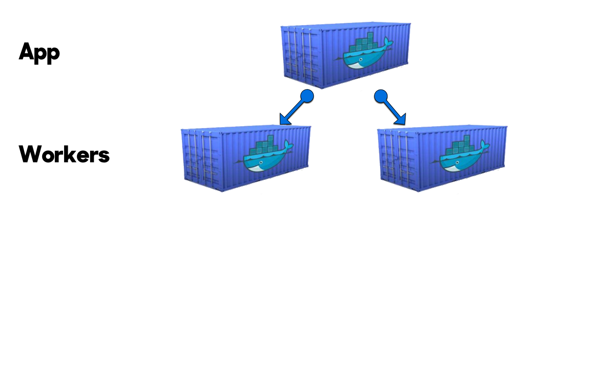
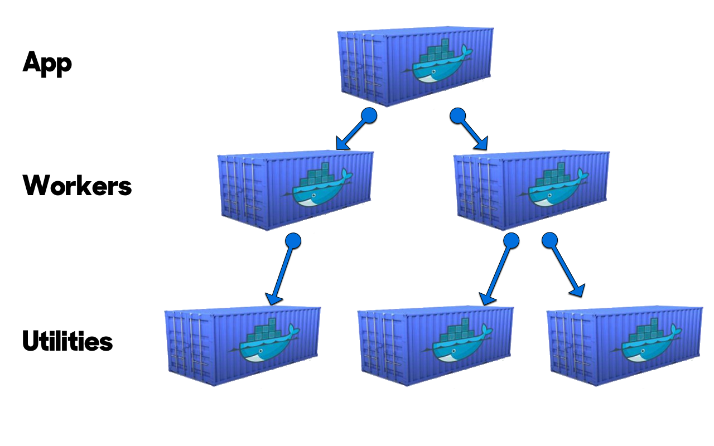
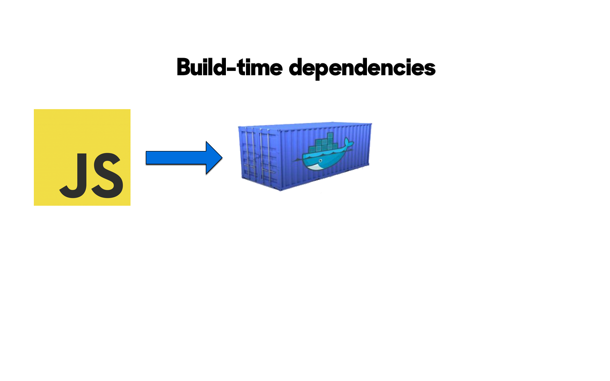
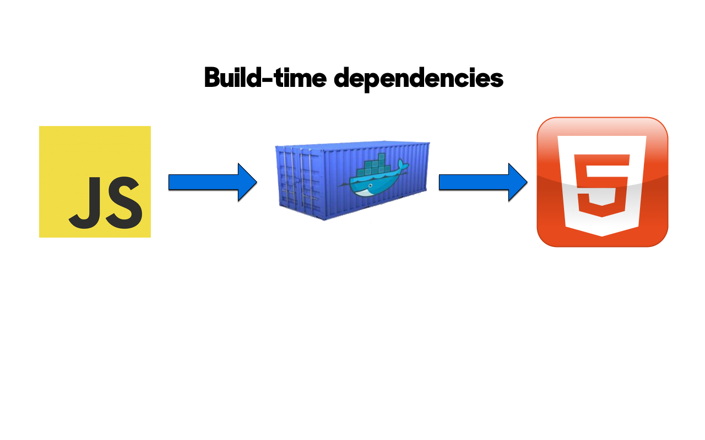

Docker from day one
Webbisauna 2014
@ilkkalaukkanen / github.com/ilkka

Docker?
The Matrix from Hell
- Your product has N parts
- It must run on the developer's laptop
- ...and on the QA server
- ...and in this public cloud
- ...and on that private cloud
- ...and on a contributor's machine
- N parts x M contexts = big problem
Ok but why do I care?
- Ship and run anywhere
- With all dependencies
- With identical dev & prod envs
- Store, redeploy, rollback, always the same
Docker on the backend



Docker on the frontend


Thanks! Questions?
@ilkkalaukkanen
github.com/ilkka